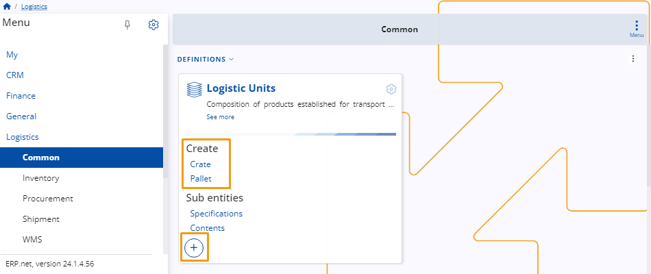
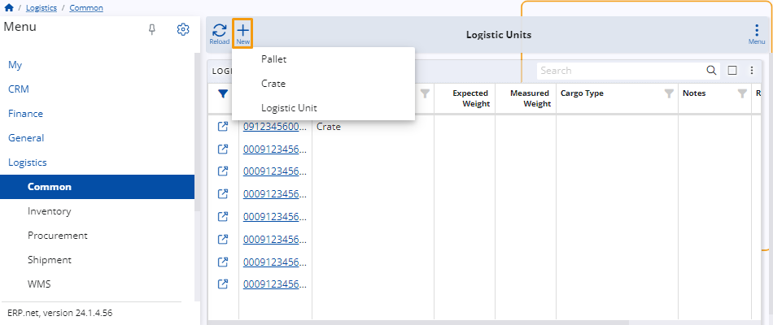
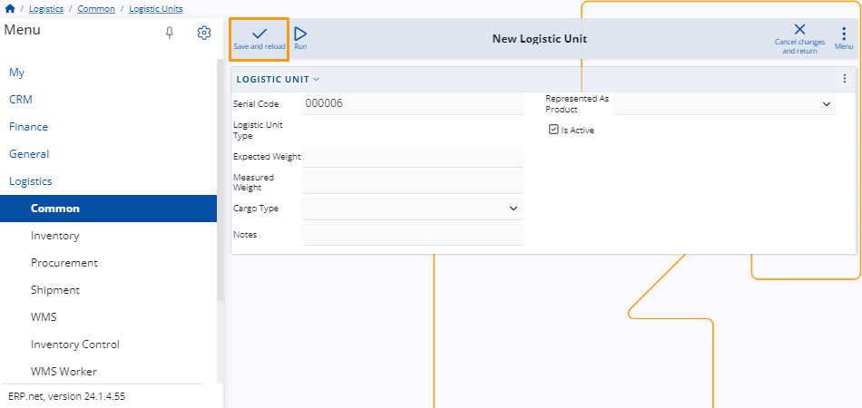

Create a new LU
To create a new logistic unit, click on the circular "+" button located on the Logistic Units panel or select one of the logistic unit types under the Create button.

Alternatively, you can click the title of the panel and then the New button located at the top-left corner of the units table.

Note
Choosing a logistic unit type remains optional. You can create a unit without one.
Once you've completed the previous steps, a separate page will open, where you need to fill out several fields:
Serial Code - Serial code of the unit (required).
Logistic Unit Type - If you've selected a unit type, it will be automatically specified here.
Expected Weight - This is the expected weight of the unit in the measurement unit specified in its type.
Measured Weight - This is the actual weight of the unit in the measurement unit specified in its type.
Cargo Type - General type of the cargo that will be used for the unit. Select one from the drop-down menu.
Notes - Additional notes can be added here.
Represented As Product - When the logistics unit is also a tradeable item, this field specifies the product used to trade the unit.
Active Status - Check this box to make the logistic unit active.
When you are ready, click on the Save and reload button to finish the creation process
